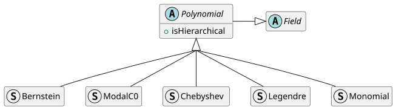
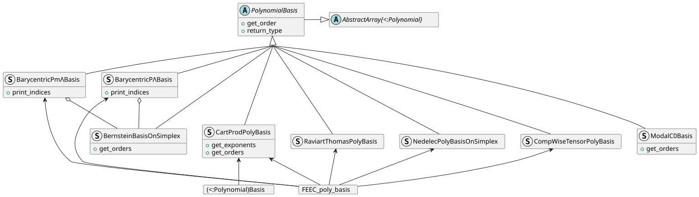

Gridap.Polynomials
The module documentation is organised as follows:
- Summary of the main features
- Mathematical definitions of the families of polynomial bases and spanned polynomial spaces
- Docstrings of implemented families and bases of polynomials
- Low level APIs, internals and deprecated methods
Summary
Gridap.Polynomials — Module
This module provides a collection of uni- and multi-variate scalar- and multi-value'd polynomial bases.
Most of the basis polynomials are composed using products of 1D polynomials, represented by the type Polynomial. Five Polynomial families are currently implemented: Monomial, Legendre, Chebyshev, Bernstein and ModalC0.
The polynomial bases all subtype PolynomialBasis, which subtypes AbstractVector{<:Field}, so they implement the Field interface up to first or second derivatives.
Constructors for commonly used bases (see the documentation for the spaces definitions):
- 𝓠 spaces:
[Polynomial]Basis(Val(D), V, order) - 𝓟 spaces:
[Polynomial]Basis(..., Polynomials._p_filter) - 𝓢r spaces:
[Polynomial]Basis(..., Polynomials._ser_filter) - 𝓠̃ spaces:
[Polynomial]Basis(..., Polynomials._qh_filter) - 𝓟̃ spaces:
[Polynomial]Basis(..., Polynomials._ph_filter)
For bases for the Nélélec, Raviart-Thomas and BDM element spaces, use FEEC_poly_basis with the arguments found in the ReferenceFEs summary of the documentation.
Examples
using Gridap
using Gridap.Polynomials
# Basis of 𝓠¹₂ of Float64 value type based on Bernstein polynomials:
# {(1-x)², 2x(1-x), x²}
D = 1; n = 2 # spatial dimension and order
b = BernsteinBasis(Val(D), Float64, n)
# APIs
length(b) # 3
value_type(b) # Float64
get_order(b) # 2
xi =Point(0.1)
evaluate(b, xi)
evaluate(Broadcasting(∇)(b), xi) # gradients
evaluate(Broadcasting(∇∇)(b), xi) # hessians, not all basis support hessians
evaluate(b, [xi, xi]) # evaluation on arrays of points
# Basis of 𝓠²₂ of Float64 value type based on Legendre polynomials, our 1D
# Legendre polynomials are normalized for L2 scalar product and moved from
# [-1,1] to [0,1] using the change of variable x -> 2x-1
# { 1, √3(2x-1), √5(6x²-6x+2),
# √3(2y-1), √3(2x-1)√3(2y-1), √5(6x²-6x+2)√3(2y-1),
# √5(6y²-6y+2), √3(2x-1)√5(6x²-6x+2), √5(6x²-6x+2)√5(6y²-6y+2) }
D = 2; n = 2
b = LegendreBasis(Val(D), Float64, n)
# Basis of (𝓟³₁)³ of VectorValue{3,Float64} value type, based on monomials:
# {(1,0,0), (0,1,0), (0,0,1)
# (x,0,0), (0,x,0), (0,0,x)
# (y,0,0), (0,y,0), (0,0,y)
# (z,0,0), (0,z,0), (0,0,z)}
D = 3; n = 1
b = MonomialBasis(Val(D), VectorValue{D,Float64}, n, Polynomials._p_filter)
evaluate(b, Point(.1, .2, .3)
# a basis for Nedelec on tetrahedra with curl in 𝓟³₂
D, k, r = 3, 1, 2+1
b = FEEC_poly_basis(Val(D),Float64,r,k,:P⁻) # basis of order 3
# a basis for Nedelec on hexahedra with curl in 𝓠³₁
D, k, r = 3, 1, 1+1
b = FEEC_poly_basis(Val(D),Float64,r,k,:Q⁻) # basis of order 2
# a basis for Raviart-Thomas on quadrilateral with divergence in 𝓠₁
D, k, r = 2, 2-1, 1+1
b = FEEC_poly_basis(Val(D),Float64,r,k,:Q⁻; rotate_90=true) # basis of order 3
# a basis for Raviart-Thomas on tetrahedra with divergence in 𝓟₂
D, k, r = 3, 3-1, 2+1
b = FEEC_poly_basis(Val(D),Float64,r,k,:P⁻) # basis of order 3Exported names
BarycentricPmΛBasis, BarycentricPΛBasis, Bernstein, BernsteinBasis, BernsteinBasisOnSimplex, CartProdPolyBasis, Chebyshev, ChebyshevBasis, CompWiseTensorPolyBasis, FEEC_poly_basis, FEEC_space_definition_checks, JacobiPolynomialBasis, Legendre, LegendreBasis, ModalC0, ModalC0Basis, Monomial, MonomialBasis, NedelecPolyBasisOnSimplex, PCurlGradMonomialBasis, PmΛ_bubbles, Polynomial, PolynomialBasis, PΛ_bubbles, QCurlGradMonomialBasis, QGradMonomialBasis, RaviartThomasPolyBasis, bernstein_term_id, bernstein_terms, get_bubbles, get_dimension, get_exponents, get_order, get_orders, isHierarchical, num_terms, print_indices, return_type, value_type,
Mathematical definitions
Families of polynomial bases
Monomials
The Monomials are the standard basis polynomials of general polynomial spaces. The order $K$ 1D monomial is
\[x \rightarrow x^K,\]
and the order $\bm{K}=(K_1, K_2, \dots, K_D)$ D-dimensional monomial is defined by
\[\bm{x} = (x_1, x_2, \dots, x_D) \longrightarrow \bm{x}^{\bm{K}} = x_1^{K_1}x_2^{K_2}...x_D^{K_D} = \Pi_{i=1}^D x_i^{K_i}.\]
Legendre polynomials
The Legendre polynomials are the orthogonal 1D basis recursively defined by
\[P_0(x) = 1,\qquad P_1(x) = x,\qquad P_{n+1}(x) = \frac{1}{(n+1)}( (2n+1)x P_{n}(x)-n P_{n-1}(x) ),\]
the orthogonality is for the $L^2$ scalar product on $[-1,1]$.
This module implements the normalized shifted Legendre polynomials, shifted to be orthogonal on $[0,1]$ using the change of variable $x \rightarrow 2x-1$, leading to
\[P^*_{n}(x)=\frac{1}{\sqrt{2n+1}}P_n(2x-1)=\frac{1}{\sqrt{2n+1}}(-1)^{n}∑ _{i=0}^{n}{\binom{n}{i}}{\binom{n+i}{i}}(-x)^{i}.\]
Chebyshev polynomials
The first kind Chebyshev polynomials $T_n$ and second kind Chebyshev polynomials $U_n$ can be recursively defined by
\[ T_{0}(x)=1,\qquad T_{1}(x)=\ \,x,\qquad T_{n+1}(x)=2x\,T_{n}(x)-T_{n-1}(x).\\ U_{0}(x)=1,\qquad U_{1}(x)=2x,\qquad U_{n+1}(x)=2x\,U_{n}(x)-U_{n-1}(x).\]
or explicitly defined by
\[T_{n}(x)=∑ _{i=0}^{\left\lfloor {n}/{2}\right\rfloor }{\binom {n}{2i}}\left(x^{2}-1\right)^{i}x^{n-2i},\qquad U_{n}(x)=∑ _{i=0}^{\left\lfloor {n}/{2}\right\rfloor }{\binom {n+1}{2i+1}}\left(x^{2}-1\right)^{i}x^{n-2i},\]
where $\left\lfloor {n}/2\right\rfloor$ is floor(n/2).
Similarly to Legendre above, this module implements the shifted first kind Chebyshev by Chebyshev{:T}, defined by
\[T^*_n(x) = T_n(2x-1).\]
The analog second kind shifted Chebyshev polynomials can be implemented by Chebyshev{:U} in the future.
Bernstein polynomials
The univariate Bernstein polynomials forming a basis of $\mathcal{P}_K$ are defined by
\[B^K_n(x) = \binom{K}{n} x^n (1-x)^{K-n}\qquad\text{ for } 0 ≤ n ≤ K.\]
The $D$-multivariate Bernstein polynomials of degree $K$ are defined by
\[B^{D,K}_α(\bm{x}) = \binom{K}{α} λ(\bm{x})^α\qquad\text{for all }α ∈\mathcal{I}_K^D\]
where
- $\mathcal{I}^D_K=\{ α ∈ ℤ_+^{N} \quad\big|\quad |α| = K \}$ where $N = D+1$,
- $\binom{|α|}{α} = \frac{|α|!}{α!} = \frac{K!}{α_1 !α_2 !\dotsα_N!}$ and $K=|α|=∑_{1 ≤ i ≤ N} α_i$,
and $λ(\bm x)$ is the set of barycentric coordinates of $\bm x$ relative to a given simplex, see the developer notes on the Bernstein bases algorithms.
The superscript $D$ and $K$ in $B^{D,K}_α(x)$ can be omitted because they are always determined by $α$ using ${D=\#(α)-1}$ and $K=|α|$. The set $\{B_α\}_{α∈\mathcal{I}_K^D}$ is a basis of $\mathcal{P}^D_K$, implemented by BernsteinBasisOnSimplex.
The Bernstein polynomials sum to $1$, and are positive in the simplex.
ModalC0 polynomials
The ModalC0 polynomials are 1D hierarchical and orthogonal polynomials $\phi_K$ for which $\phi_K(0) = \delta_{0K}$ and $\phi_K(1) = \delta_{1K}$. This module implements the generalised version introduced in Eq. 17 of Badia-Neiva-Verdugo 2022.
When ModalC0 is used as a <:Polynomial parameter in CartProdPolyBasis or other bases (except ModalC0Basis), the trivial bounding box (a=Point{D}(0...), b=Point{D}(1...)) is assumed, which coincides with the usual definition of the ModalC0 bases.
Polynomial spaces in FEM
See also the excellent DefElements.org website for more detailed definitions and examples.
$\mathcal{P}$ and $\mathcal{Q}$ spaces
Let us denote $\mathcal{P}_K(x)$ the space of univariate polynomials of order up to $K$ in the varible $x$
\[\mathcal{P}_K(x) = \text{Span}\big\{\quad x\rightarrow x^i \quad\big|\quad 0 ≤ i ≤ K \quad\big\}.\]
Then, $\mathcal{Q}^D$ and $\mathcal{P}^D$ are the spaces for Lagrange elements on D-cubes and D-simplices respectively, defined by
\[\mathcal{Q}^D_K = \text{Span}\big\{\quad \bm{x}\rightarrow\bm{x}^α \quad\big|\quad 0 ≤ α_1, α_2, \dots, α_D ≤ K \quad\big\},\]
and
\[\mathcal{P}^D_K = \text{Span}\big\{\quad \bm{x}\rightarrow\bm{x}^α \quad\big|\quad 0 ≤ α_1, α_2, \dots, α_D ≤ K;\quad ∑_{d=1}^D α_d ≤ K \quad\big\}.\]
To note, there is $\mathcal{P}_K = \mathcal{P}^1_K = \mathcal{Q}^1_K$.
Serendipity space $\mathcal{S}$r
The serendipity space, commonly used for serendipity finite elements on n-cubes, are defined by
\[\mathcal{S}r^D_K = \text{Span}\big\{\quad \bm{x}\rightarrow\bm{x}^α \quad\big|\quad 0 ≤ α_1, α_2, \dots, α_D ≤ K;\quad ∑_{d=1}^D α_d\;\mathbb{1}_{[2,K]}(α_d) ≤ K \quad\big\}\]
where $\mathbb{1}_{[2,K]}(α_d)$ is $1$ if $α_d ≥ 2$ or else $0$.
Homogeneous $\mathcal{P}$ and $\mathcal{Q}$ spaces
It will later be useful to define the homogeneous Q spaces
\[\tilde{\mathcal{Q}}^D_K = \mathcal{Q}^D_K\backslash\mathcal{Q}^D_{K-1} = \text{Span}\big\{\quad \bm{x}\rightarrow\bm{x}^α \quad\big|\quad 0 ≤ α_1, α_2, \dots, α_D ≤ K; \quad \text{max}(α) = K \quad\big\},\]
and homogeneous P spaces
\[\tilde{\mathcal{P}}^D_K = \mathcal{P}^D_K\backslash \mathcal{P}^D_{K-1} = \text{Span}\big\{\quad \bm{x}\rightarrow\bm{x}^α \quad\big|\quad 0 ≤ α_1, α_2, \dots, α_D ≤ K;\quad ∑_{d=1}^D α_d = K \quad\big\}.\]
Nédélec $curl$-conforming spaces
The Kᵗʰ Nédélec polynomial spaces on respectively rectangles and triangles are defined by
\[\mathcal{ND}^2_K(\square) = \left(\mathcal{Q}^2_K\right)^2 ⊕ \left(\begin{array}{c} y^{K+1}\,\mathcal{P}_K(x)\\ x^{K+1}\,\mathcal{P}_K(y) \end{array}\right) ,\qquad \mathcal{ND}^2_K(\bigtriangleup) =\left(\mathcal{P}^2_K\right)^2 ⊕\bm{x}\times(\tilde{\mathcal{P}}^2_K)^2,\]
where $\times$ here means $\left(\begin{array}{c} x\\ y \end{array}\right)\times\left(\begin{array}{c} p(\bm{x})\\ q(\bm{x}) \end{array}\right) = \left(\begin{array}{c} y p(\bm{x})\\ -x q(\bm{x}) \end{array}\right)$ and $⊕$ is the direct sum of vector spaces.
Then, the Kᵗʰ Nédélec polynomial spaces on respectively hexahedra and tetrahedra are defined by
\[\mathcal{ND}^3_K(\square) = \left(\mathcal{Q}^3_K\right)^3 ⊕ \bm{x}\times(\tilde{\mathcal{Q}}^3_K)^3,\qquad \mathcal{ND}^3_K(\bigtriangleup) =\left(\mathcal{P}^3_K\right)^3 ⊕ \bm{x}\times(\tilde{\mathcal{P}}^3_K)^3.\]
$\mathcal{ND}^D_K(\square)$ and $\mathcal{ND}^D_K(\bigtriangleup)$ are of order K+1 and the curl of their elements are in $(\mathcal{Q}^D_K)^D$ and $(\mathcal{P}^D_K)^D$ respectively.
Raviart-Thomas and Nédélec $div$-conforming Spaces
The Kᵗʰ Raviart-Thomas polynomial spaces on respectively D-cubes and D-simplices are defined by
\[\mathcal{RT}^D_K(\square) = \left(\mathcal{Q}^D_K\right)^D ⊕ \bm{x}\;\tilde{\mathcal{Q}}^D_K, \qquad \mathcal{RT}^D_K(\bigtriangleup) = \left(\mathcal{P}^D_K\right)^D ⊕ \bm{x}\;\tilde{\mathcal{P}}^D_K,\]
these bases are of maximum degree K+1 and the divergence of their elements are in $\mathcal{Q}^D_K$ and $\mathcal{P}^D_K$ respectively.
$\mathcal{P}_r^{-}Λ^k$ and $\mathcal{P}_rΛ^k$ bases
Those bases are a generalization of the scalar Bernstein bases to the spaces for the two principal finite element families forming a de Rham complex on simplices. They are respectively implemented by BarycentricPmΛBasis and BarycentricPmΛBasis. Their definition with references, and implementation details are provided in this developer note.
Filter functions
Some filter functions are used to select which terms of a D-dimensional tensor product space of 1D polynomial bases are to be used to create a D-multivariate basis. When a filter can be chosen, the default filter is always the trivial filter for space of type 𝓠, yielding the full tensor-product space.
The signature of the filter functions should be
(term,order) -> Boolwhere term is a tuple of D integers containing the exponents of a multivariate monomial, that correspond to the multi-index $α$ previously used in the P/Q spaces definitions.
The following example filters can be used to define associated polynomial spaces:
| space | filter | possible family |
|---|---|---|
| 𝓠ᴰ | _q_filter(e,order) = maximum(e) <= order | All |
| 𝓠̃ᴰₙ | _qh_filter(e,order) = maximum(e) == order | Monomial |
| 𝓟ᴰ | _p_filter(e,order) = sum(e) <= order | hierarchical |
| 𝓟̃ᴰₙ | _ph_filter(e,order) = sum(e) == order | Monomial |
| 𝓢rᴰₙ | _ser_filter(e,order) = sum( i for i in e if i>1 ) <= order | hierarchical |
Types for polynomial families
The following types represent particular polynomial bases 'families' or 'types', later shortened as PT in type parameters.
Gridap.Polynomials.Polynomial — Type
Polynomial <: FieldAbstract type for polynomial bases families/types. It has trait isHierarchical.

Polynomials do not implement the Field interface, only the PolynomialBasis can be evaluated.
Gridap.Polynomials.isHierarchical — Function
isHierarchical(::Type{Polynomial})::BoolReturn true if the 1D basis of order K of the given Polynomial basis family is the union of the basis of order K-1 and an other order K polynomial. This implies that the iᵗʰ basis polynomial is of order i-1.
The currently implemented hierarchical families are Monomial, Legendre and Chebyshev.
Gridap.Polynomials.Monomial — Type
Monomial <: PolynomialType representing the monomial polynomials, c.f. Monomials section.
Gridap.Polynomials.Legendre — Type
Legendre <: PolynomialType representing the normalised shifted Legendre polynomials, c.f. Legendre polynomials section.
Gridap.Polynomials.Chebyshev — Type
Chebyshev{kind} <: PolynomialType representing Chebyshev polynomials of the
- first kind:
Chebyshev{:T} - second kind:
Chebyshev{:U}
C.f. Chebyshev polynomials section.
Gridap.Polynomials.Bernstein — Type
Bernstein <: PolynomialType representing Bernstein polynomials, c.f. Bernstein polynomials section.
Gridap.Polynomials.ModalC0 — Type
ModalC0 <: PolynomialType representing ModalC0 polynomials, c.f. ModalC0 polynomials section.
The 1D polynomials are
- $φ₁(x) = 1-x$
- $φ₂(x) = x$
- $φᵢ(x) = Cᵢ(1-x)x𝑱ᵢ(s(x)), 3 ≤ i ≤ k$
where $Cᵢ$ is a constant, $𝑱ᵢ$ the $i$th (1,1)-Jacobi polynomial and $s$ an affine transformation.
Reference: Eq. (17) in 10.1016/j.camwa.2022.09.027.
The first 1D polynomial, $1-x$, is of order $1$ instead of $0$, and the last one, $x$, is of order $1$ istead of $K$. So the complete 1D basis isn't hierarchical.
Polynomial bases
Gridap.Polynomials.PolynomialBasis — Type
PolynomialBasis{D,V,PT<:Polynomial} <: AbstractVector{PT}Abstract type representing a generic multivariate polynomial basis. The parameters are:
D: the spatial dimensionV: the image values type, a concrete type<:Realor<:MultiValuePT <: Polynomial: the family of the basis polynomials (must be a concrete type).
The implementations also stores K: the maximum order of a basis polynomial in a spatial component
Gridap.Polynomials.get_order — Method
get_order(b::PolynomialBasis)Return the maximum polynomial order in any dimension, or 0 in 0D. For tensor-valued bases, it is the maximum for each component.
Gridap.Polynomials.get_orders — Method
get_orders(b::PolynomialBasis{D})Return the D-tuple of maximum polynomial orders in each spatial dimension, or () in 0D.
For tensor-valued bases, it is the maximum order of any component, for each dimension.
Gridap.Polynomials.get_dimension — Method
get_dimension(::PolynomialBasis{D}) -> DGridap.Polynomials.value_type — Function
value_type(b::PolynomialBasis{D,V}) where {D,V} = VReturn the expected value-type of a polynomial in b. In practice, the scalar type is promoted with that of the points at which b is evaluated, so it might differ from eltype(V).
Gridap.Polynomials.FEEC_poly_basis — Function
FEEC_poly_basis(::Val{D},T,r,k, F::Symbol, PT=_default_poly_type(F); kwargs...)"Factory for polynomial basis of Finite Element Exterior Calculus spaces"
Return, if it is implemented, a polynomial basis for the space $\mathrm{F}ᵣΛᵏ$ in dimension D, with T the scalar component type and PT<:Polynomial the polynomial basis family.
The default PT is Bernstein on simplices and ModalC0 on D-cubes.
Arguments
D: spatial dimensionT::Type: scalar components typer::Int: polynomial orderk::Int: form orderF::Symbol: family, i.e.:P⁻,:P,:Q⁻or:S
kwargs
rotate_90::Bool: only ifD=2 andk=1, tells to use the vector proxy corresponding to div conform function instead of curl conform ones.vertices=nothing: forPT=Bernsteinbases on simplices (F = :Por:P⁻), the basis is defined on the simplex defined byverticesinstead of the reference one.cart_prod=false: fork=0 ork=D, authoriseTto be a tensor type for Cartesian product space of the scalar space.
Gridap.Polynomials.FEEC_space_definition_checks — Function
FEEC_space_definition_checks(::Val{D}, T, r, k, F, rotate_90; cart_prod=false)Check if the argument define a valid Finite Element Exterior Calculus (FEEC) polynomial space, as defined in the Periodic Table of the Finite Elements, $\mathrm{F}ᵣΛᵏ$ in dimension D.
The arguments are also described in FEEC_poly_basis.
Gridap.Polynomials.MonomialBasis — Method
MonomialBasis(::Val{D}, ::Type{V}, order::Int, terms::Vector)
MonomialBasis(::Val{D}, ::Type{V}, order::Int [, filter::Function])
MonomialBasis(::Val{D}, ::Type{V}, orders::Tuple [, filter::Function])High level constructors of MonomialBasis.
Gridap.Polynomials.MonomialBasis — Type
MonomialBasis{D,V} = CartProdPolyBasis{D,V,Monomial}Alias for tensor-product basis of the 1D scalar monomial basis, scalar valued or multivalued.
If multivalued, this is a direct sum basis spaning the Cartesian product polynomial space, see also CartProdPolyBasis.
Gridap.Polynomials.LegendreBasis — Method
LegendreBasis(::Val{D}, ::Type{V}, order::Int, terms::Vector)
LegendreBasis(::Val{D}, ::Type{V}, order::Int [, filter::Function])
LegendreBasis(::Val{D}, ::Type{V}, orders::Tuple [, filter::Function])High level constructors of LegendreBasis.
Gridap.Polynomials.LegendreBasis — Type
LegendreBasis{D,V} = CartProdPolyBasis{D,V,Legendre}Alias for tensor-product basis of the 1D scalar Legendre basis, scalar valued or multivalued.
If multivalued, this is a direct sum basis spaning the Cartesian product polynomial space, see also CartProdPolyBasis.
Gridap.Polynomials.ChebyshevBasis — Method
ChebyshevBasis(::Val{D}, ::Type{V}, order::Int, terms::Vector; kind=:T)
ChebyshevBasis(::Val{D}, ::Type{V}, order::Int [, filter::Function; kind=:T])
ChebyshevBasis(::Val{D}, ::Type{V}, orders::Tuple [, filter::Function; kind=:T])High level constructors of ChebyshevBasis.
Gridap.Polynomials.ChebyshevBasis — Type
ChebyshevBasis{D,V,kind} = CartProdPolyBasis{D,V,Chebyshev{kind}}Alias for tensor-product basis of the 1D scalar Chebyshev basis, scalar valued or multivalued.
If multivalued, this is a direct sum basis spaning the Cartesian product polynomial space, see also CartProdPolyBasis.
Gridap.Polynomials.BernsteinBasis — Method
BernsteinBasis(::Val{D}, ::Type{V}, order::Int, terms::Vector)
BernsteinBasis(::Val{D}, ::Type{V}, order::Int [, filter::Function])
BernsteinBasis(::Val{D}, ::Type{V}, orders::Tuple [, filter::Function])High level constructors of BernsteinBasis.
Calling BernsteinBasis with the filters (e.g. a _p_filter) rarely yields a basis for the associated space (e.g. $\mathcal{P}$). Indeed, the term numbers do not correspond to the degree of the polynomial, because the basis is not hierarchical.
Gridap.Polynomials.BernsteinBasis — Type
BernsteinBasis{D,V} = CartProdPolyBasis{D,V,Bernstein}Alias for tensor-product basis of the 1D scalar Bernstein basis, scalar valued or multivalued.
If multivalued, this is a direct sum basis spaning the Cartesian product polynomial space, see also CartProdPolyBasis.
Gridap.Polynomials.BernsteinBasisOnSimplex — Type
BernsteinBasisOnSimplex{D,V,M} <: PolynomialBasis{D,V,Bernstein}Type for the multivariate Bernstein basis in barycentric coordinates, c.f. Bernstein polynomials section of the documentation. If V is not scalar, a duplication and direct sum of the scalar Bernstein basis is made for each independent component of V, yielding a basis of the Cartesian product space.
The index of B_α in the basis is bernstein_term_id(α).
M is Nothing for the reference tetrahedra barycentric coordinates or SMatrix{D+1,D+1} if some simplex (triangle, tetrahedra, ...) vertices coordinates are given.
Gridap.Polynomials.BernsteinBasisOnSimplex — Type
BernsteinBasisOnSimplex(::Val{D},::Type{V},order::Int)
BernsteinBasisOnSimplex(::Val{D},::Type{V},order::Int,vertices)Constructors for BernsteinBasisOnSimplex.
If specified, vertices is a collection of D+1 Point{D} defining a simplex used to compute the barycentric coordinates from, it must be non-degenerated (have nonzero volume).
Gridap.Polynomials.bernstein_terms — Function
bernstein_terms(K,D)Return the vector of multi-indices for the D-dimensional Bernstein basis of order K, that is
$Iₖᴰ = \{ α ∈ {0:K}ᴰ⁺¹ | |α| = K \}$
ordered in decreasing lexicographic order, e.g. {200, 110, 101, 020, 011, 002} for K=2, D=2.
Gridap.Polynomials.bernstein_term_id — Function
bernstein_term_id(α)For a given Bernstein multi-index α (vector or tuple), return the associated linear index of α ordered in decreasing lexicographic order, that is the i such that
(i,α) ∈ enumerate(bernstein_terms(K,D))where K = sum(α), see also bernstein_terms.
Gridap.Polynomials.BarycentricPmΛBasis — Method
BarycentricPmΛBasis(::Val{D}, T, r, k, vertices=nothing; kwargs...)Constructors for BarycentricPmΛBasis of scalar type T. If vertices are specified, they must define a non-degenerate simplex, c.f. BernsteinBasisOnSimplex.
The kwargs are the following:
indices::BarycentricPΛIndices = nothing: may be provided to avoid allocations of new indices, or to select specific bubbles spaces,DG_calc = false: set totrueto choosek-form valued polynomials instead of vector valued polynomials (not implemented yet),rotate_90 = false: In 2Dfork=1,trueto apply a 90° rotation of the vector proxied polynomials ((x,y) -> (-y,x)), needed for Raviart-Thomas/BDM.
Gridap.Polynomials.BarycentricPΛBasis — Method
BarycentricPΛBasis(::Val{D}, T, r, k, vertices=nothing; kwargs...)Constructors for BarycentricPΛBasis of scalar type T. If vertices are specified, they must define a non-degenerate simplex, c.f. BernsteinBasisOnSimplex.
The kwargs are the following:
indices::BarycentricPΛIndices = nothing: may be provided to avoid allocations of new indices, or to select specific bubbles spaces,DG_calc = false: set totrueto choosek-form valued polynomials instead of vector valued polynomials (not implemented yet),rotate_90 = false: In 2Dfork=1,trueto apply a 90° rotation of the vector proxied polynomials ((x,y) -> (-y,x)), needed for Raviart-Thomas/BDM.
Low level APIs and internals

Gridap.Polynomials.CartProdPolyBasis — Type
struct CartProdPolyBasis{D,V,PT} <: PolynomialBasis{D,V,PT}"Basis for the Cartesian product of the span of scalar polynomial basis"
Type representing a basis of a (an)isotropic D-multivariate V-valued cartesian product polynomial space. The basis is obtained by direct sum of copies of the scalar basis, scattered over each independant component of V, as in
V(𝓢, ∅, ..., ∅) ⊕ V(∅, 𝓢, ∅, ..., ∅) ⊕ ... ⊕ V(∅, ..., ∅, 𝓢)
where the scalar space 𝓢 is a (subspace of a) tensor product space of an univariate polynomial basis.
The scalar polynomial basis spanning 𝓢 is defined as
{ x ⟶ bαᴷ(x) = bα₁ᴷ(x₁) × bα₂ᴷ(x₂) × ... × bαDᴷ(xD) | α ∈ terms }
where bαᵢᴷ(xᵢ) is the αᵢth 1D basis polynomial of the basis PT of order K evaluated at xᵢ (iᵗʰ comp. of x), and where α = (α₁, α₂, ..., αD) is a multi-index in terms, a subset of {0:K}ᴰ. terms is a field that can be passed in a constructor.
This type fully implements the Field interface, with up to second order derivatives.
Gridap.Polynomials.CartProdPolyBasis — Method
CartProdPolyBasis(::Type{PT}, ::Type{V}, ::Val{D}, order::Int [, filter=_q_filter])Return a CartProdPolyBasis{D,V,order,PT} where 𝓢 is defined by the terms filtered by
term -> filter(term, order).See the Filter functions section of the documentation for more details.
Gridap.Polynomials.CartProdPolyBasis — Method
CartProdPolyBasis(::Type{PT}, ::Val{D}, ::Type{V}, orders::Tuple [, filter=_q_filter])This constructor allows to pass a tuple orders containing the maximal polynomial order to be used in each of the D spatial dimensions in order to construct a tensorial anisotropic D-multivariate space 𝓢.
If a filter is provided, it is applied on the cartesian product terms CartesianIndices(orders), with maximum(orders) as order argument.
Gridap.Polynomials.get_exponents — Function
get_exponents(b::CartProdPolyBasis)Get a vector of tuples with the exponents of all the terms in the basis of 𝓢, the components scalar space of b.
Example
using Gridap.Polynomials
b = MonomialBasis(Val(2),Float64,2)
exponents = get_exponents(b)
println(exponents)
# output
Tuple{Int,Int}[(0, 0), (1, 0), (2, 0), (0, 1), (1, 1), (2, 1), (0, 2), (1, 2), (2, 2)]Gridap.Polynomials.CompWiseTensorPolyBasis — Type
CompWiseTensorPolyBasis{D,V,PT} <: PolynomialBasis{D,V,PT}"Polynomial basis of component-wise tensor-product scalar spaces"
Polynomial basis for a D-multivariate V-valued polynomial space:
V(𝓢₁, ∅, ..., ∅) ⊕ V(∅, 𝓢₂, ∅, ..., ∅) ⊕ ... ⊕ V(∅, ..., ∅, 𝓢ₗ)
with l>1, where the scalar D-multivariate spaces 𝓢ⱼ (for 1 ≤ j ≤ l) of each (independent) component of V is defined by a list of terms like the component space of CartProdPolyBasis. However, CompWiseTensorPolyBasis uses l independent terms lists for each component of V.
Any 1D polynomial family PT<:Polynomial and any tensor-value type V<:MultiValue is usable.
The 1D basis used for direction/coordinate n of component j is orders[j,n] where the orders matrix is given in the constructors.
First and second order derivatives are supported, as long as the resulting tensor is of order maximum 3.
If PT is not hierarchical, the 1D bases in a direction n are different for different components if orders[:,n] are not all the same.
Examples
These return instances of CompWiseTensorPolyBasis
# a basis for Raviart-Thomas on quadrilateral with divergence in 𝓠₃
b = FEEC_poly_basis(Val(2),Float64,4,1,:Q⁻; rotate_90)
# a basis for Raviart-Thomas on hexahedra with divergence in 𝓠₃
b = FEEC_poly_basis(Val(3),Float64,4,2,:Q⁻)
# a basis for Nedelec on triangle with curl in 𝓠₃
b = FEEC_poly_basis(Val(2),Float64,4,1,:Q⁻)
# a basis for Nedelec on hexahedra with curl in 𝓠₃
b = FEEC_poly_basis(Val(3),Float64,4,1,:Q⁻)Gridap.Polynomials.NedelecPolyBasisOnSimplex — Type
NedelecPolyBasisOnSimplex{D,V,PT} <: PolynomialBasis{D,V,PT}Basis of the vector valued (V<:VectorValue{D}) space 𝓝𝓓ᴰₙ(△) for D=2,3. This space is the polynomial space for Nedelec elements on simplices with curl in (𝓟ᴰₙ)ᴰ. Its maximum degree is n+1 = K. get_order on it returns K.
𝓝𝓓ᴰₙ(△) = (𝓟ᴰₙ)ᴰ ⊕ x × (𝓟ᴰₙ \ 𝓟ᴰₙ₋₁)ᴰ
Currently, the basis is implemented as the union of a CartProdPolyBasis{...,PT} for 𝓟ᴰₙ and a monomial basis for x × (𝓟ᴰₙ \ 𝓟ᴰₙ₋₁)ᴰ.
Using this basis is not recommanded, BarycentricPmΛBasis is better numerically conditioned for higher degrees, they are obtained by using Bernstein as argument of FEEC_poly_basis .
Examples
These return instances of NedelecPolyBasisOnSimplex
# a basis for Nedelec on triangles with curl in 𝓟²₁
b = FEEC_poly_basis(Val(2),Float64,2,1,:P⁻,Monomial)
# a basis for Nedelec on tetrahedra with curl in 𝓟³₁
b = FEEC_poly_basis(Val(3),Float64,2,1,:P⁻,Monomial)Gridap.Polynomials.RaviartThomasPolyBasis — Type
RaviartThomasPolyBasis{D,V,PT} <: PolynomialBasis{D,V,PT}Basis of the vector valued (V<:VectorValue{D}) space
𝓡𝓣ᴰₙ = (𝓢ₙ)ᴰ ⊕ x (𝓢ₙ\𝓢₍ₙ₋₁₎)
where 𝓢ₙ is a D-multivariate scalar polynomial space of maximum degree n = K-1.
This 𝓡𝓣ᴰₙ is the polynomial space for Raviart-Thomas elements with divergence in 𝓢ₙ. Its maximum degree, that get_order returns, is n+1 = K.
Using this basis on simplices is not recommanded, BarycentricPmΛBasis is better numerically conditioned for higher degrees, they are obtained by using Bernstein as argument of FEEC_poly_basis .
Example:
# a basis for Raviart-Thomas on tetrahedra with divergence in 𝓟₂
b = RaviartThomasPolyBasis{3}(Monomial, Float64, 2)
# a basis for Raviart-Thomas on quadrilateral with divergence in 𝓟₃
b = RaviartThomasPolyBasis{2}(Monomial, Float64, 3, _q_filter)The space 𝓢ₙ, typically 𝓟ᴰₙ or 𝓠ᴰₙ, does not need to have a tensor product structure of 1D scalar spaces. Thus, the 𝓡𝓣ᴰₙ component's scalar spaces are not tensor products either.
𝓢ₙ is defined like a scalar valued CartProdPolyBasis via the _filter argument of the constructor, by default _p_filter for 𝓟ᴰₙ. As a consequence, PT must be hierarchical, see isHierarchical.
Gridap.Polynomials.ModalC0Basis — Type
ModalC0Basis{D,V,T} <: PolynomialBasis{D,V,ModalC0}Tensor-product basis of generalised modal C0 1D basis from section 5.2 in 10.1016/j.camwa.2022.09.027. See also ModalC0 polynomials section of the documentation.
Gridap.Polynomials.ModalC0Basis — Method
ModalC0Basis{D}(::Type{V},order::Int; [, filter][, sort!:])
ModalC0Basis{D}(::Type{V},order::Int, a::Point ,b::Point ; [, filter][, sort!:])
ModalC0Basis{D}(::Type{V},orders::Tuple; [, filter][, sort!:])
ModalC0Basis{D}(::Type{V},orders::Tuple,a::Point ,b::Point ; [, filter][, sort!:])
ModalC0Basis{D}(::Type{V},orders::Tuple,a::Vector,b::Vector; [, filter][, sort!:])where filter is a Function defaulting to _q_filter, and sort! is a Function defaulting to _sort_by_nfaces!.
At last, all scalar basis polynomial will have its bounding box (a[i],b[i]), but they are assumed iddentical if only two points a and b are provided, and default to a=Point{D}(0...), b=Point{D}(1...) if not provided.
The basis spans the cartesian product of the scalar basis space when multi-valued (basis is a direct sum basis for each component), isotropic if one order is provided, or anisotropic if a D tuple orders is provided.
Gridap.Polynomials.BarycentricPmΛBasis — Type
BarycentricPmΛBasis{D,V,LN,B} <: PolynomialBasis{D,V,Bernstein}Finite Element Exterior Calculus polynomial basis for the spaces P⁻ᵣΛᴷ on D-dimensional simplices, but with polynomial forms explicitely transformed into vectors using the standard equivalence with usual vector calculus defined in terms of the hodge star operator ⋆ and the sharp map ♯, see _basis_forms_components (the simplex is assumed Euclidean).
VisVectorValue{L,T}whereLis binomial(D,k),Bis the concrete type of theBernsteinBasisOnSimplexnecessary for the evaluation of the polynomials.
The number of basis polynomials is binomial(r+k-1,k)*binomial(D+r,D-k) if no filtered bubble indices are given.
Reference: D.N. Arnold, R.S. Falk & R. Winther, Geometric decompositions and local bases for spaces of finite element differential forms, CMAME, 2009
Gridap.Polynomials.BarycentricPΛBasis — Type
BarycentricPΛBasis{D,V,C,B} <: PolynomialBasis{D,V,Bernstein}Finite Element Exterior Calculus polynomial basis for the spaces PᵣΛᴷ on D-dimensional simplices, but with polynomial forms explicitely transformed into vectors using the standard equivalence with usual vector calculus defined in terms of the hodge star operator ⋆ and the sharp map ♯, see _basis_forms_components (the simplex is assumed Euclidean).
VisVectorValue{L,T}whereL=binomial(D,k),Cis the number of basis polynomials,Bis the concrete type of theBernsteinBasisOnSimplexnecessary for the evaluation of the polynomials.
C = binomial(r+k,k)*binomial(D+r,D-k) if no custom bubble indices are given.
Reference: D.N. Arnold, R.S. Falk & R. Winther, Geometric decompositions and local bases for spaces of finite element differential forms, CMAME, 2009
Gridap.Polynomials.BarycentricPmΛBasis — Method
BarycentricPmΛBasis(b::BarycentricPmΛBasis, faces::Vector{Int}...)Create a new basis which is b restricted to the bubble spaces for F ∈ faces.
Gridap.Polynomials.BarycentricPΛBasis — Method
BarycentricPΛBasis(b::BarycentricPΛBasis, faces::Vector{Int}...)Create a new basis which is b restricted to the bubble spaces for F ∈ faces. The faces are represented by some Vector{Int} of their vertices ids, like in BarycentricPΛIndices.
Gridap.Polynomials.print_indices — Function
print_indices(b::BarycentricPmΛBasis, out=stdout)
print_indices(b::BarycentricPΛBasis, out=stdout)Prints the indices of b in a user friendly format into out.
Gridap.Polynomials.get_bubbles — Function
get_bubbles(b::BarycentricPmΛBasis)
get_bubbles(b::BarycentricPΛBasis)Get the iterator over the bubble spaces in the geometric decomposition of b, typically generated by PmΛ_bubbles or PΛ_bubbles.
They can be vizualized using print_indices(b).
Gridap.Polynomials.PΛ_bubbles — Function
PΛ_bubbles(r,k,D)Generates the indices caracterizing the basis function of BarycentricPΛBasis, described in the Bernstein bases algorithm Developper notes of the official documentation, and are used as follows:
for (F, bubble_functions) in PΛ_bubbles(r,k,D)
for (w, α, α_id, J) in bubble_functions
# ...
end
endGridap.Polynomials.PmΛ_bubbles — Function
PmΛ_bubbles(r,k,D)Generates the indices caracterizing the basis function of BarycentricPmΛBasis, described in the Bernstein bases algorithm Developper notes of the official documentation, and are used as follows:
for (F, bubble_functions) in PmΛ_bubbles(r,k,D)
for (w, α, α_id, J, sub_J_ids, sup_α_ids) in bubble_functions
# ...
end
endGridap.Polynomials.BarycentricPΛIndices — Type
struct BarycentricPΛIndices
identity::UInt
bubbles::Vector{Bubble}
components::Vector{Tuple{ Int, Vector{Int}, Int}}
endFor storing indices in BarycentricP(m)ΛBasis. The bubbles are generated by PΛ_bubbles or PmΛ_bubbles, the components by _basis_forms_components.
Deprecated APIs
Gridap.Polynomials.num_terms — Function
Gridap.Polynomials.PCurlGradMonomialBasis — Type
PCurlGradMonomialBasis{D}(T,order::Int) where DGridap.Polynomials.QGradMonomialBasis — Type
QGradMonomialBasis{D}(T,order::Int) where DGridap.Polynomials.QCurlGradMonomialBasis — Type
QCurlGradMonomialBasis{D}(T,order::Int) where DGridap.Polynomials.JacobiPolynomialBasis — Type
JacobiPolynomialBasis{D}(args...) where D